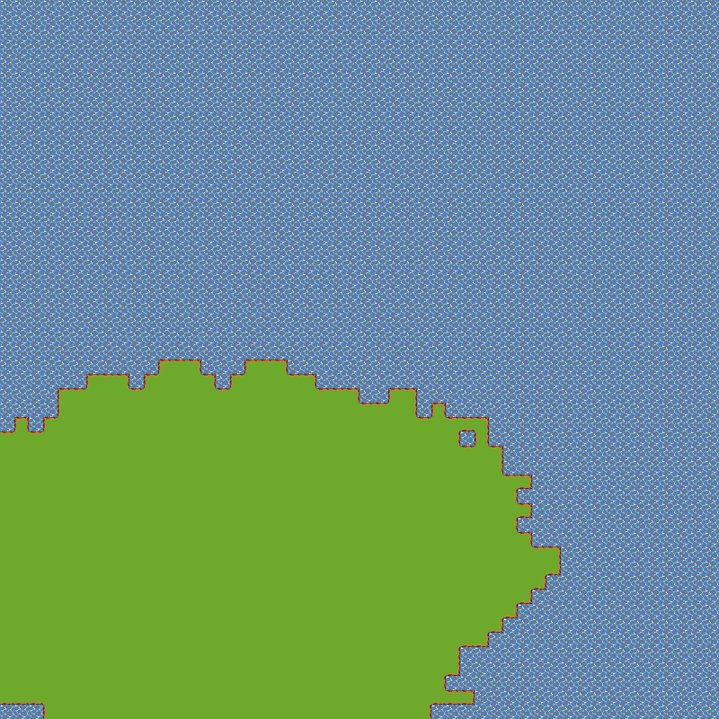
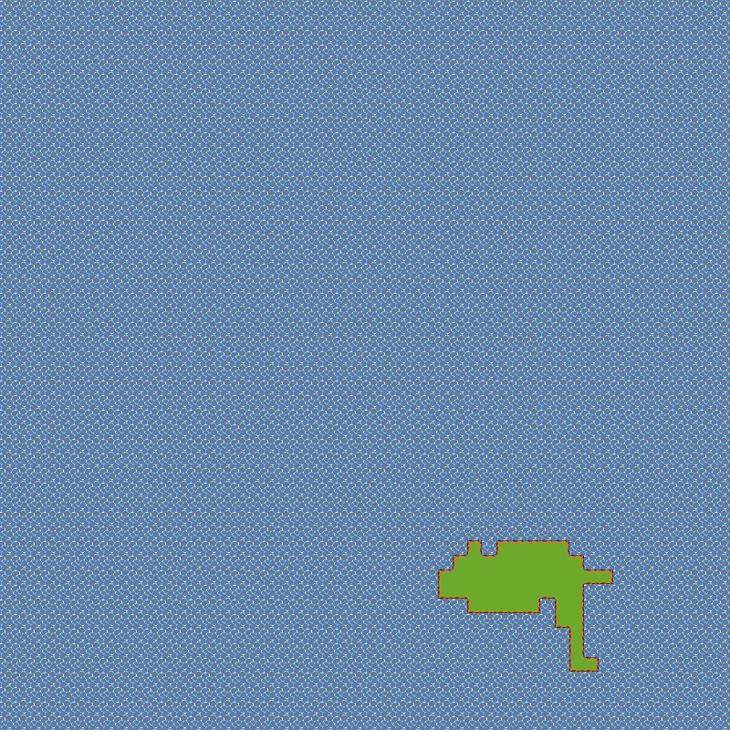
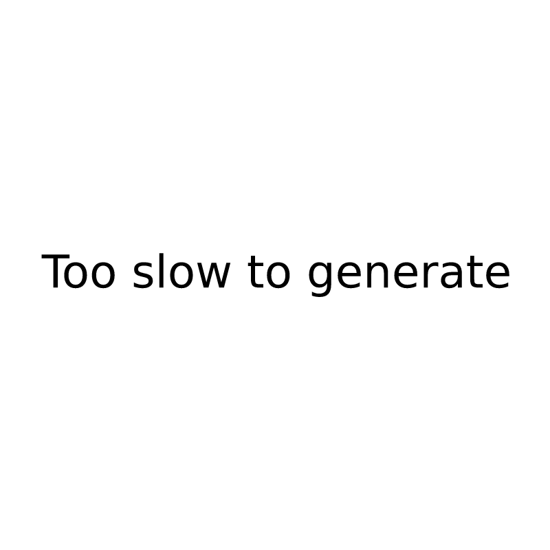

随机生成指定面积单连通区域
最近在知乎上看到一个问题，「随机生成指定面积单连通区域？」，感觉还挺有意思的，于是整理一下写一篇新文章。
问题阐述
如下图所示，在 10x10 的区域中，随机生成面积为 6 的单连通区域，该「随机」包括「位置随机」以及「形状随机」。

注意：
- 单连通区域定义是该区域每一个区块上下左右至少连着另一个区块；
- 采用周期性结构，超出右边移到最左边，以此类推。
其中点 2 可以分采用和不采用周期性结构分别讨论。
随便说说
这个问题，我不知道原题提问者想要做什么事。但是就这题本身而言，我们可以拿它去生成一个随机地图，例如：
建造、等待的沙盒类手游，游戏中有一个空岛，玩家能在上面建造自己的建筑然后等待各种事件完成。空岛形状随机生成，并且都联通且面积一定，这样每个玩家进去的时候就能得到不同地形。
解决一下
在得知了问题原题之后，我们就可以照着题目的意思开始解决了。
DFS
其实这么一个问题一出现，脑子里面就瞬间涌出几个词汇：DFS、Flood fill、并查集等等。
那么其实这最粗暴的办法相当于你假想有一个连通区域，然后你去 Flood fill 它——至于墙在哪，在递归的每一个节点的时候随机一下搜索方向的顺序就可以了。
实现外壳
我们先实现一个类的框架吧（我是 Node.js 开发者，自然用 JavaScript 进行 Demo 的输出）。
const INIT = Symbol("init"); |
非周期性实现
有了架子之后，我们就可以实现递归函数 fill 了，整理一下流程如下：
- 随机一个起点位置，并以此开始递归搜索；
fill(x, y)进入递归搜索：- 如果需要初始化地图就调用
this[INIT]()； this.count++，表示填充区域面积加了1，并在数组中将该位置填充为x；this.count是否等于所需要的面积：- 若等于，则返回当前的地图状态；
- 若不等于，则继续 2.4；
- 随机四个方向的顺序；
- 对四个方向进行循环：
x、y轴的值按当前方向走一个算出新的坐标值newX和newY；- 判断坐标是否合法（越界算非法）：
- 若非法则回 2.5 继续下一个方向；
- 若合法则继续 2.5.3；
- 递归
fill(newX, newY)得到结果，若有结果则返回；
- 若循环完四个方向都还没返回结果则会跳到这一步来，这个时候进行状态还原，递归跳回上一层进行下一个状态的搜索。
- 如果需要初始化地图就调用
在这里「状态还原」表示把
this.count--还原回当前坐标填充前的状态，并且把当前填充的'x'给还原回'.'。
照着上面的流程很快就能得出代码结论：
const _ = require("lodash"); |
这么一来，类就写好了。接下去我们只要实现一些交互的代码，就可以看效果了。
点我进入 JSFiddle 看效果。
如果懒得进入 JSFiddle 看，也可以看看下面的几个截图：
10x10 填 50 效果图
10x10 填 6 效果图
50x50 填 50 效果图
周期性实现
其实原题说了一个条件，那就是采用周期性结构，超出右边移到最左边，以此类推。
而我们前文的代码其实是照着非周期性结构来实现的。不过如果我们要将其改成周期性实现也很简单，只需要把前文代码中边界判断的那一句代码改为周期性计算的代码即可，也就是说要把这段代码：
// 判断边界 |
改为：
// 周期性计算 |
这个时候出来的效果就是这样的了：
10x10 填 50 周期性效果图
抛弃状态还原
至此为止 DFS 的代码基本上完成了。不过目前来说，当然这个算法的一个缺陷就是，当需要面积与总面积比例比较大的时候，有可能陷入搜索的死循环（或者说效率特别低），因为要不断复盘。
所以我们可以做点改造——由于我们不是真的为了搜索到某个状态，而只是为了填充我们的小点点，那么 DFS 中比较经典的「状态还原」就不需要了，也就是说：
this.count--; |
这两行代码可以删掉了，用删掉上面两行代码的代码跑一下，我用 50x50 填充 800 格子的效果：
继续之前的 50x50 填充 50：
生成「胖胖的」区域
上面 DFS 的方法，由于每次都要走完一条路，虽然会转弯导致黏连，但在填充区域很小的情况下，很容易生成“瘦瘦的区域”。
这里再给出另一个方法，一个 for 搞定的，思路如下：
- 先随机一个起始点，并将该点加入边界池；
- 循环 N - 1 次（N 为所需要填充的面积）：
- 从边界池中随机取出一个边界；
- 算出与其接壤的四个点，取出还未被填充的点；
- 在取出的点中随机一个将其填充；
- 填充后计算改点接壤的四个点是否有全都是已经填充了的，若不是，则将该坐标加入边界池；
- 拿着刚才计算的接壤的四个点，分别判断其是否周边四个点都已被填充，若是且该点在边界池中，则从边界池拿走；
- 回到第二大步继续循环；
- 返回填充好的结果。
给出代码 Demo：
function random(max) { |
注意：上面的代码是我一溜烟写出来的，所以并没有后续优化代码简洁度，其实很多地方的代码可以抽象并复用的，懒得改了，能看就好了。用的时候就跟之前 DFS 代码一样
new一个Filler2出来并fill就好了。效果依然可以去 JSFiddle 看。
或者也可以直接看效果图：
|  |
|---|
显而易见，跟之前 DFS 生成出来的奇形怪状相比，这种算法生成的连通区域更像是一块 Mainland，而前者则更像是一个洼地沼泽或者丛林。
结合一下？
前面两种算法，一个是生成瘦瘦的稀奇古怪的面积，一个是生成胖胖的区域。有没有办法说在生成胖胖的区域的情况下允许一定的稀奇古怪的形状呢？
其实将两种算法结合一下就好了。结合的做法有很多，这里举一个例子，大家可以自己再去想一些出来。
- 首先将需要的区域对半分（即配比 1 : 1），例如如果需要 800，就分为 400 跟 400。（为了长得好看，其实这个比例可以自行调配）
- 将前一半的区域用
for生成胖胖的区域； - 将剩下的区域随机几次，每次随机一个剩下所需要的面积以内的数，将这个数字作为 DFS 所需要生成的面积量，并从边界数组中随机取一个边界坐标并计算其合法接壤坐标开始进行 DFS 得到结果；
- 循环第 3 步知道所需区域面积符合要求为止。
注意：为了保证每次 DFS 一开始的时候都能取到最新的边界坐标，在 DFS 流程中的时候每标一个区域填充也必须走一遍边界坐标更新的逻辑。
具体代码就不放文章里面解析了，大家也可以到 JSFiddle 中去观看。
或者也可以直接看效果图：
|  |
|---|
还能更丧心病狂吗？
结合了两种算法，我们得到了一个我认为可能会更好看一点的区域。
此外，我们还能继续「丧心病狂」一点，例如两种方式交替出现，流程如下：
- 指定特定方法和面积，奇数次用
for，偶数次用 DFS；- 如果是
for则随机一个Math.min(剩余面积, 总面积 / 4)的数字； - 如果是 DFS 则随机一个
Math.min(剩余面积, 总面积 / 10)的数字；
- 如果是
- 从边界数组中取一个坐标，并从合法接壤坐标中取一个坐标出来；
- 以第 2 步取出的坐标为起点，使用第 1 步指定的方法生成第 1 步指定的面积的单连通区域；
- 如果生成面积仍小于指定面积，则回到第 1 步继续循环，否则返回当前结果。
依旧是给出 JSFiddle 的预览。
或者也可以直接看效果图：
注意：这里只给出思路，具体配比和详细流程大家可以继续优化。
几张效果对比图
最后，这里给出几张 10x10 填 50 的效果图放一起对比一下。
 |
 |
|||||
|---|---|---|---|---|---|---|
以及，几张 50x50 填充 800 面积的效果图对比。
|  | ||||||
|---|---|---|---|---|---|---|
我错了之『真·单连通区域』
之所以多出一节来，是因为我在写回答以及这篇文章的时候脑抽了一下，迷迷糊糊想成了连通区域，感谢评论区童鞋的提醒。实际上单连通区域要稍微复杂一些。
在拓扑学中，单连通是拓扑空间的一种性质。直观地说，单连通空间中所有闭曲线都能连续地搜索至一点。此性质可以由空间的基本群刻画。
这个空间不是单连通的，它有三个洞

对于非周期性的区域来说，生成一个单连通区域只要在上面的方法里面加点料就可以了。即在一个位置填充的时候，判断一下将它填充进去之后是否会出现所谓的「洞」。而这一点在非周期性区域中，由于在填充当前坐标前，已存在的区域已经是一个单连通区域，所以枚举一下几种情况即可排除非单连通区域的情况：
- 新加的坐标其上下都有填充，但其左右为空；或者左右都有填充，但其上下为空；
- 新加的坐标只有一面相邻有填充，但该面对面的边所对应的两个角对过去至少有一个角与其它坐标共享顶点；
- 新加的坐标同一个顶点的两条边有接壤，且其对角顶点对过去的坐标与其共享顶点。
而对于周期性的区域来说，暂时我还没想到很好的办法。
对于情况一而言，如果处于对面的两接壤坐标都有填充，且再多一个接壤面的话，原小区域内只有可能是「匚」型，那么填充进去只会形成一个 2x3 的实心区域，而如果只有处于对面的两个接壤坐标有填充的话，说明原小区域有两个面对面隔空的区域，它们形成单连通区域的大前提就是从其它地方绕出去将它们连起来，若这个时候将它们闭合的话，势必会形成一个空洞，如下图所示：
对于情况二而言，如果只有一面有填充，但是对面的顶点有共享的话，可以类比为情况一，举例如下：
对于情况三而言，其实就是情况二加一条边有填充，如果在情况二的情况下，在上图“原”的区域下方的空若已有填充，那么在“新”的位置填充进去，就形不成空洞了。毕竟如果“空”的位置已有填充的话，若先前状态生成没有洞的连通区域，则“空”下方也必定不是一个空洞的区域。
在解析完三种情况后，算法就明朗起来——在上面的 DFS 算法每次执行填充操作的时候，都判断一下当前填充是否符合刚才列举的三种情况，若符合，则不填充该点。
所以只需对 DFS 的那个代码做一下修改就好了，首先把状态还原两行代码删掉，然后在之前
if (newX < 0 || newX >= this.length || newY < 0 || newY >= this.length) continue; |
这句代码之下加一个条件判断就好了：
if(this.willBreak(newX, newY)) { |
剩下的就是去实现 this.willBreak() 函数：
class Filler { |
进 JSFiddle 看完整代码。
然后是 50x50 填充 800 的效果：
以及 10x10 填充 50：
注意：左下角的洞看起来是洞，实际上是处于边界了，而填充区域无法与边界合成闭合区域，实际上将地图往外想想空一格就可以知道它并不是一个洞了。当然如果读者执意不允许这种情况发生，那么只需要在
willBreak()函数判断的时候做点手脚就可以了，至于怎么做手脚大家自己想吧。
这种情况生成的地图比较像迷宫，哪怕是针对「胖胖的区域」做这个改进，JSFiddle 出来的也是下面的效果：
所以呢，继续优化——我们知道有三种情况是会生成非单连通区域的，所以当我们探测到这种情况的时候，去 BFS 它内外区域，看看究竟是哪个区域被封闭出一个空洞来，探测出来之后再看看我们目前还需要填充的区域面积跟这个空洞的面积是否够用，若够用则将空洞补起来，不够用则当前一步重新来过——即再随机一个坐标看看行不行。
思想说出来了，具体的实现还是看看我写在 JSFiddle 里面的代码吧。
50x50 填充 800 的效果如下：
这么一来，我们很容易能跟 DFS 的算法结合起来，即之前说过的更丧病的算法。结合方法很简单，分别把改进过的 DFS 和胖胖区域的算法一起融合进之前丧病算法的代码中就好了。老样子我还是把代码更新到了 JSFiddle 里面。大家看看 50x50 填充 800 的效果吧：
最后，由于一开始文章写的概念性错误给大家带来的不变表示非常抱歉，好在最后我还是补全了一下文章。
小结
本文主要还是讲了，如何随机生成一个指定面积的单连通区域。从一开始拍脑袋就能想到 DFS 开始，延伸到胖胖的区域，然后从个人认为「图不好看」开始，想办法如何结合一下两种算法使其变得更自然。
针对同一件事的算法们并非一成不变或者不可结合的。不是说该 DFS 就只能 DFS，该 for 就只能 for，稍微结合一下也许食用效果更佳哦。
哦对了，在这之前还有一个例子就是我在三年多前写的主题色提取的文章《图片主题色提取算法小结》，其中就讲到我最后的方法就是结合了八叉树算法和最小差值法，使其在提取比较贴近的颜色同时又能够规范化提取出来的颜色。
总之就是多想想，与诸君共勉。